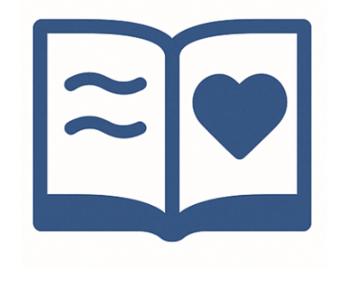
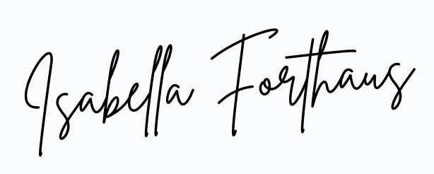

 Personal Reflection
My Journey Into Healthcare Administration:
As a senior at Mizzou, I found choosing a major to be a difficult task. I loved my science courses like biology and anatomy, but I was also drawn to business classes such as microeconomics and accounting. Torn between the two, I decided to merge these interests into a career in healthcare administration and pursue a bachelor’s degree in health sciences with an emphasis in leadership and policy. While I felt some uncertainty at first, I knew I made the right choice after taking courses like Healthcare in the United States and Healthcare Management, which sparked my interest in the behind-the-scenes workings of our healthcare system.
To add hands-on experience to my degree, I joined the Future Healthcare Leaders Club and Sigma Eta Rho Health Sciences Fraternity. These organizations have surrounded me with like-minded peers and given me opportunities to hear directly from professionals in a variety of healthcare roles. As a founding member and future executive board member of FHL, I’m excited to help expose other students to the field of healthcare administration and to create meaningful networking and shadowing opportunities. To gain even more real-world experience, I am currently interning at Garden View Assisted Living Facility in Valley Park. There, I assist with administrative tasks, care plan meetings, regulatory compliance, onboarding of new hires, and quality assurance data collection. I’m eager to continue learning through this internship and to apply what I’ve learned in the classroom to real-life settings.
During my time at the Mizzou College of Health Sciences, I have developed a strong passion for helping others and for understanding how leadership can directly impact the quality of care people receive. I'm focused on building a career where I can make a real difference in people’s lives, especially when they’re at their most vulnerable. My goal is to become a nursing home administrator, where I can help create a space where older adults feel respected, valued, and truly cared for. I’ve always believed that healthcare should be personal and human, not just a series of policies and procedures. This belief has only grown stronger as I’ve studied concepts like patient-centered care, cultural understanding, and organizational leadership. I want to be the kind of leader who listens, makes ethical decisions, and pushes for high-quality care, because people deserve this support, especially in the later stages of life.
Looking ahead, I’m motivated by the chance to make a lasting impact in long-term care. I believe that compassionate administrative leadership can truly transform the resident experience. My vision is to help shape nursing homes into environments where dignity, transparency, and quality care are the standard. Through my coursework, internship, and involvement in healthcare organizations, I’ve seen that impactful leadership takes more than just knowledge. It requires empathy, adaptability, and a commitment to constant improvement. I look forward to carrying these values with me as I work towards a future in nursing home administration.
